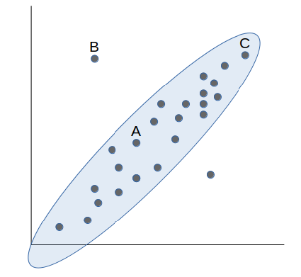
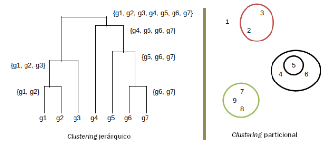
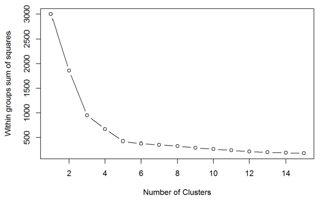
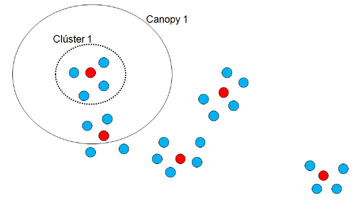
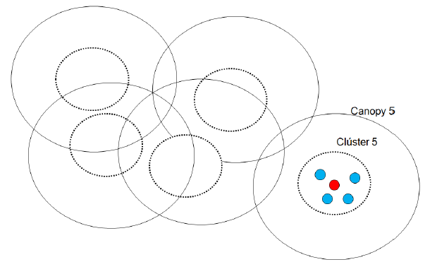
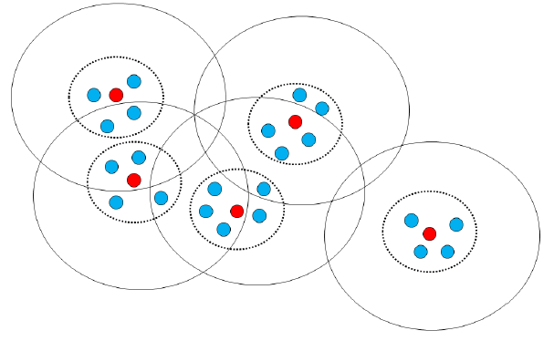
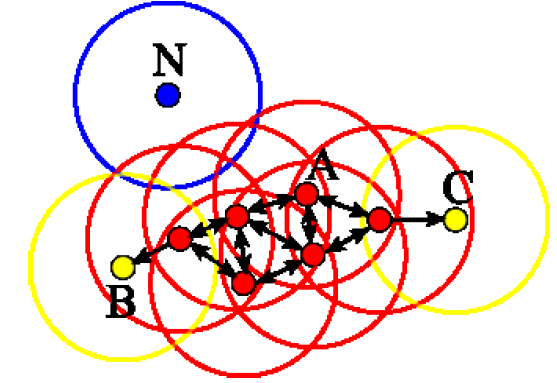
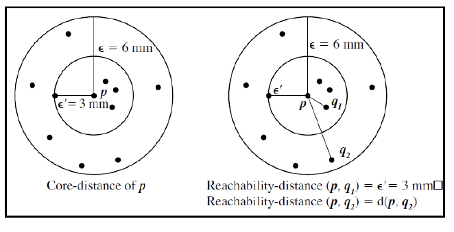
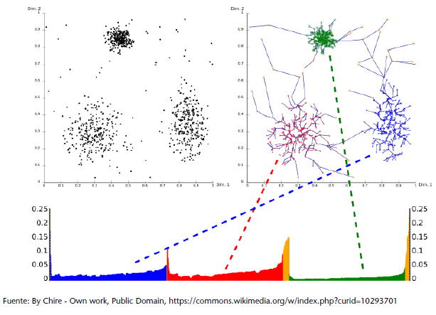
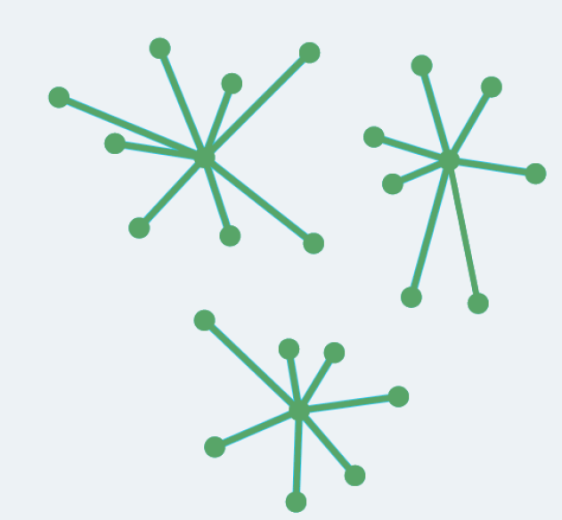

Conceptos preliminares.
Contents
8. Conceptos preliminares.#
8.1. Introducción.#
La clasificación no supervisada persigue la obtención de un modelo válido para clasificar objetos a partir de la similitud de sus características. Más formalmente podríamos decirlo del siguiente modo:
A partir de un conjunto de objetos descritos por un vector de características y a partir de una métrica que nos defina el concepto de similitud entre objetos, se construye un modelo o regla general que nos va a permitir clasificar todos los objetos.
No se trata de modelos predictivos, sino de modelos de descubrimiento de patrones. Existen dos grandes familias de algoritmos de clasificación no supervisada:
1.- Algoritmos jerárquicos. construyen nodos de forma jerárquica, unos a partir de otros. La representación de los resultados se hace habitualmente mediante dendogramas. Estos se dividen en dos subcategorías:
Aglomerativos o bottom up. Esta aproximación parte del supuesto que cada objeto es un nodo o clúster y, a medida que evolucionan los pasos del algoritmo, los nodos se van agrupando hasta conseguir un número de nodos aceptable.
Divisivos o top down. Es la aproximación opuesta, es decir, parte del supuesto que existe un único nodo y, a medida que avanza el algoritmo, este nodo se va subdividiendo en nuevos nodos, y así sucesivamente.
Ejemplos de algoritmos jerárquicos pueden ser el método del mínimo o single linkage y el método del máximo o complete linkage.
2.- Algoritmos particionales. También llamados algoritmos de optimización, obtienen los nodos a partir de la optimización de una función adecuada para el propósito del estudio. Esta función suele estar relacionada con la métrica seleccionada para establecer el concepto de similitud entre objetos.
8.2. Cuestiones preliminares.#
Como hemos visto, muchos modelos no supervisados basan su lógica en el concepto de similitud o distancia, de modo que merece la pena dedicar tiempo a su comprensión, ya que nos ayudará a entender el mecanismo de algoritmos como el k-means y el clustering, entre otros.
8.2.1. Distancia o similitud.#
Cuando hablamos de distancia, en realidad estamos refiriéndonos a una forma de cuantificar cómo de similares son dos objetos, dos variables o dos puntos. Planteado de esta forma, el concepto de distancia es muy abstracto y etéreo; por este motivo, los científicos quieren ponerle algunos límites o condiciones.
Para un conjunto de elementos X, se considera distancia cualquier función:
que cumple la siguientes condiciones:
No negatividad: la distancia entre dos puntos siempre debe ser positiva.
Simetría. la distancia entre dos puntos a y b es la misma si se mide desde a hacia b que desde b hacia a.
La desigualdad triangular. Coincide con la idea de que la distancia en recta entre dos puntos es el camino más corto.
Con estas tres condiciones, vamos a centrarnos en tres definiciones de distancia muy peculiares: la euclidiana o clásica, la estadística o de Gauss y la que propuso Mahalanobis.
8.2.1.1. Distancia euclídea.#
Si tenemos dos puntos \(A(x_{1},y_{1})\) y \(B(x_{2},y_{2})\) entonces la distancia euclídea entre estos dos puntos sería la siguiente:
Utilizar esta distancia en un proceso de segmentación presenta un inconveniente.No tiene en cuenta las escalas en las que pueden estar expresadas las variables X e Y.
8.2.1.2. Distancia de Gauss.#
Para superar la distorsión provocada por las diferentes unidades de medida usadas en las distintas variables estudiadas tenemos la distancia estadística, que simplemente normaliza las variables para situarlas a todas bajo la misma escala.
Si tenemos dos puntos \(A(x_{1},y_{1})\) y \(B(x_{2},y_{2})\) entonces la distancia de Gauss entre estos dos puntos sería la siguiente:
Nuevamente, este concepto de distancia tiene problemas. No tiene en cuenta la correlación entre las variables, es decir, si nuestras variables fueran totalmente independientes no habría ningún problema. Sin embargo, si tienen algún tipo de correlación, una influye sobre la otra y esta influencia no queda bien reflejada si usamos las distancias definidas anteriormente.
8.2.1.3. Distancia de Mahalanobis.#
Prasanta Chandra Mahalanobis (India) en 1936 se dio cuenta de esta carencia y propuso corregir la distorsión provocada por la correlación de las variables mediante la siguiente expresión:
La definición de distancia propuesta por Mahalanobis responde a la idea intuitiva de que los puntos que se encuentran en una zona densamente poblada deberían considerarse más cercanos entre ellos que con respecto a puntos fuera de esta zona de mayor densidad.
Si tomamos como ejemplo la siguiente figura , vemos como una versión clásica de distancia nos diría que el punto A está más cerca de B que de C. Sin embargo, Mahalanobis, entendiendo qué puntos en zona de densidad son más similares, nos dirá que el punto A está más cerca de C que de B.

8.3. Clustering y segmentación.#
Clustering y segmentation, traducidos como agrupamiento y segmentación, constituyen el ámbito de conocimiento correspondiente a las técnicas no supervisadas, ya que no tienen como objetivo predecir una etiqueta que marca cada observación del juego de datos.
Su objetivo es describir el juego de datos encontrando patrones a partir de la identificación de grupos similares
De este modo, los conceptos de distancia y similitud serán claves para entender este tipo de algoritmos.
8.3.1. Agrupación jerárquica.#
Dentro de esta familia, distinguiremos dos tipos de algoritmo: los aglomerativos y los divisivos.
8.3.1.1. Algoritmos de tipo aglomerativo.#
Los algoritmos de agrupación jerárquica son de tipo aglomerativo cuando, partiendo de una fragmentación completa de los datos, estos se van fusionando hasta conseguir una situación contraria, es decir, todos los datos se unen en un solo grupo. En este caso hablaremos de clustering o agrupamiento.
Para construir grupos, necesitan de un concepto de distancia entre objetos y de un criterio de enlace para establecer la pertenencia a un grupo u otro. Algunos de los criterios más utilizados para medir la distancia entre dos grupos A y B son los siguientes:
Enlace simple o simple linkage. Tomaremos como criterio la distancia mínima entre elementos de los grupos:
Puede ser apropiado para encontrar grupos de forma no elíptica, pero es muy sensible al ruido en los datos y puede llegar a provocar el efecto cadena. Este consiste en el hecho de que puede llegar a forzar la unión de dos grupos, que a priori deberían permanecer bien diferenciados, por el hecho de que estos compartan algún elemento muy próximo.
Enlace completo o complete linkage. Tomaremos como criterio la distancia máxima entre elementos de los grupos:
No produce el efecto cadena, pero es sensible a los valores outliers. Sin embargo, suele dar mejores resultados que el criterio simple.
Enlace medio o average linkage. Tomaremos como criterio la distancia media entre elementos de los grupos:
Se trata de un criterio que intenta mitigar los inconvenientes de los dos anteriores sin acabar de resolverlos por completo.
Enlace centroide o centroid linkage. La distancia entre dos grupos será la distancia entre sus dos centroides. Presenta la ventaja de que su coste computacional es muy inferior al de los criterios anteriores, de modo que está indicado para juegos de datos de gran volumen.
Para construir un dendograma aglomerativo, deberemos inicialmente establecer con qué métrica desearemos trabajar (distancia euclidiana, de Gauss, de Mahalanobis…) y qué criterio de enlace de grupos o segmentos utilizaremos (simple linkage, complete linkage, average linkage, centroid linkage…).
El siguiente paso será considerar cada observación del juego de datos como un grupo o segmento en sí mismo, y a partir de aquí empezaremos a calcular distancias entre grupos. En este punto entraremos en un proceso iterativo en el que en cada repetición fusionaremos los grupos más cercanos.
8.3.1.2. Algoritmos de tipo divisivo.#
Diremos que son de tipo divisivo cuando, partiendo de un grupo que contiene todos los datos, se procede a una división progresiva hasta conseguir tener un grupo para cada observación. En este caso hablaremos de segmentación.
8.3.2. Algoritmos particionales.#
Los algoritmos particionales o no jerárquicos reciben este nombre porque los segmentos que acaban produciendo no responden a ningún tipo de organización jerárquica. En esta categoría de algoritmos encontraríamos al k-means.

En la figura anterior podemos distinguir de una forma visual la diferencia entre el clustering jerárquico y el particional.
8.3.2.1. k-means.#
El algoritmo k-means, o k-medias en español, está considerado como un algoritmo de clasificación no supervisada. Requiere que de antemano se fijen los k grupos que quieren obtenerse.
Supongamos que disponemos de un juego de datos compuesto por n observaciones.Por ejemplo, cada caso podría ser un cliente del que hemos seleccionado m atributos que lo caracterizan.
Llamaremos X a este juego de datos \(X=\left\{ x_{1},x_{2},...,x_{n}\right\} \) donde cada \(x_i\) podría ser un cliente con m atributos \(x_{i}=\left\{ x_{i1},x_{i2},...,x_{im}\right\} \) como pueden ser, por ejemplo, ventas, promociones, distancia al centro de distribución logística, etc.
Para clasificar nuestro juego de datos X mediante el algoritmo k-means, seguiremos los siguientes pasos:
1.- De entre las n observaciones seleccionaremos k, al que llamaremos semillas, y denotaremos por \(c_j\) donde j = 1,…,k. Cada semilla \(c_j\) identificará su clúster \(C_j\).
2.- Asignaremos la observación \(x_i\) al clúster \(C_t\) cuando la distancia entre la observación \(x_i\) y la semilla \(c_t\) sea la menor entro todas las semillas.
3.- Calcularemos los nuevos centroides a partir de las medias de los clústeres actuales.
4.- Como criterio de parada, calcularemos la mejora que se produciría si asignáramos una observación a un clúster al que no pertenece actualmente. Entendiendo por mejora, por ejemplo, la minimización de la distancia de las distintas observaciones a sus respectivos centros.
5.- Haremos al cambio que mayor mejora proporciona.
6.- Repetiremos los pasos 3, 4 y 5 hasta que ningún cambio sea capaz de proporcionar una mejora significativa.
8.3.2.1.1. Criterios para seleccionar k.#
Uno de los inconvenientes que tiene k-means es el hecho de que requiere que se le especifique de antemano el valor k (número de clústeres).
Los valores k para los que ya no se consiguen mejoras significativas en la homogeneidad interna de los segmentos o la heterogeneidad entre segmentos distintos, deberían descartarse.
En la figura que sigue hemos generado un gráfico con la suma de las distancias intragrupo que obtenemos para cada valor de k.

Observamos cómo, a partir de cinco segmentos, la mejora que se produce en la distancia interna de los segmentos ya es insignificante. Este hecho debería ser indicativo de que cinco segmentos es un valor adecuado para k.
8.3.3. Canopy clustering.#
Podemos pensar esta técnica como una generalización de los algoritmos particionales.
La idea brillante que subyace a esta técnica es que podemos reducir drásticamente el número de cálculos que requieren los algoritmos particionales como k-means, introduciendo un proceso previo de generación de grupos superpuestos o (canopies) a partir de una métrica más sencilla de calcular, (cheapest metric).
De esta forma, solo calcularemos distancias con la métrica inicial, más estricta y pesada en cálculos, para los puntos que pertenecen al mismo canopy
Podríamos resumirlo diciendo que, previamente, mediante una métrica simple, decidimos qué puntos están definitivamente lejos y, en consecuencia, para estos puntos alejados ya no valdrá la pena malgastar más cálculos con una métrica más exigente.
En realidad, el método del canopy clustering divide el proceso de segmentación en dos etapas:
En la primera, usaremos una métrica sencilla en cálculos con el objetivo de generar los canopies o subgrupos superpuestos de puntos. Además, lo haremos de modo que cada punto pueda pertenecer a más de un canopy y, a su vez, todos los puntos tengan que pertenecer al menos a un canopy.
En la segunda, utilizaremos un método de segmentación tradicional, como por ejemplo el método k-means, pero lo haremos con la siguiente restricción: no calcularemos la distancia entre puntos que no pertenecen al mismo canopy.
Para facilitar la comprensión del mecanismo del algoritmo, vamos a situarnos en los dos casos extremos:
1.- Supongamos que, como consecuencia de la primera etapa, nuestro universo de puntos cae por completo en un solo canopy. Entonces, el método de segmentación por canopies sería exactamente igual al del método de segmentación tradicional seleccionado, es decir, k-means en nuestro ejemplo.
2.- Supongamos que, como resultado de la primera etapa, generamos canopies relativamente pequeños y conmuy poca superposición. En este caso, al aplicar la técnica tradicional solo dentro de cada canopy, habremos ahorrado un gran número de cálculos.
Para ilustrar de un modo gráfico el proceso de construcción de canopies a partir de una métrica simple y el proceso de construcción de clústeres a partir de una métrica más exigente, proporcionamos una serie de tres figuras.
Inicialmente, en la primera y siguiente, se aprecia cómo los canopies se construyen de una forma amplia y con superposiciones.

En la siguiente figura apreciamos cómo los clústeres se calculan sin superposiciones y siempre dentro de su canopy correspondiente.

Finalmente en la figura siguiente podemos ver el resultado final de un proceso de segmentación mediante la técnica del canopy clustering.

8.4. Modelos basados en densidad.#
Los modelos de clustering basados en la densidad constituyen una familia de algoritmos que han dado muy buenos resultados y, en consecuencia, han despertado el interés de muchos analistas. Este tipo de algoritmos se especializan en identificar zonas de alta concentración de observaciones separadas entre sí por zonas con menor densidad de observaciones.
Los dos algoritmos más conocidos son DBSCAN y OPTICS
8.4.1. Algoritmo DBSCAN.#
Density-based Spatial Clustering of Applications with Noise, un nombre complejo para un algoritmo que en el fondo es muy sencillo. Veamos cómo funciona.
Inicialmente, requiere que se le informe de dos parámetros:
El valor ε (epsilon): máximo radio de vecindad. Consideraremos que dos puntos u observaciones están cercanos si la distancia que los separa es menor o igual a ε.
El valor minPts: mínimo número de puntos en la ε-vecindad de un punto.Podemos pensarlo como el valor que marcará nuestro criterio de qué consideramos como denso.
De este modo, DBSCAN irá construyendo esferas de radio ε que al menos incluyan minPts observaciones.La lógica que sigue el algoritmo para construir los clústeres o zonas densamente pobladas es la siguiente:
Se considera que un punto p es un punto núcleo, core point, si al menos tiene minPts puntos a una distancia menor o igual a ε. Dicho de otro modo, contiene minPts en la ε-vecindad.
Un punto q es alcanzable desde p, (p-reachable), donde p es núcleo, si la distancia entre ambos es inferior o igual a ε. Dicho de otro modo, si está dentro de la ε-vecindad de p.
Un punto q es alcanzable desde p, si existe un camino de puntos núcleo que los conecta. ES decir, si existe \(p_1,p_2,...,p_n\) con \(p_1=p\) y \(p_n=q\), donde cada \(p_{i+1}\) es alcanzable por \(p_i\) y todos los \(p_1,p_2,...,p_{n-1}\) son puntos núcleo.
Cualquier punto no alcanzable se considerará punto extremo o outlier.
La siguiente figura nos muestra de un modo esquemático, el proceso de construcción de zonas de densidad. En este ejemplo se toma minPts = 4.

Los puntos B y C corresponden a la frontera del clúster, es decir, son puntos alcanzables desde un punto núcleo, pero ellos mismo no son punto núcleo porque no incluyen minPts en su ε-vecindario.
Los puntos A son puntos núcleo ya que como mínimo cada uno de ellos tiene 4 puntos en un radio ε pre-fijado.
Finalmente, el punto N se considera extremo o outlier puesto que no es alcanzable desde ningún punto del juego de datos.
8.4.1.1. Ventajas e inconvenientes.#
La principal ventaja de DBSCAN es que es capaz de identificar clústeres de cualquier forma geométrica, no solo circular, ya que solo necesita que exista la combinación de zonas con alta y baja densidad de concentración de puntos. Es especialmente bueno identificando valores extremos. Contrariamente a otros algoritmos, para DBSCAN no supone ningún inconveniente trabajar con un juego de datos con este tipo de valores.
DBSCAN tampoco requiere que le prefijemos el número de clústeres que queremos que identifique. Lo único que necesita es que haya zonas de baja densidad de puntos para así poder marcar bien las fronteras entre clústeres.
En cuanto a inconvenientes, el principal es el hecho de tener que fijar como parámetros de entrada los valores ε y minPts. Acertar con el valor óptimo de estos parámetros requiere de experiencia y conocimiento tanto sobre el algoritmo en sí como sobre el propio juego de datos.
8.4.2. Algoritmo OPTICS.#
Ordering Points to Identify Cluster Structure es un algoritmo que de algún modo generaliza DBSCAN y resuelve su principal inconveniente: los parámetros iniciales.
OPTICS requiere un radio ε y un criterio de densidad minPts igual que DBSCAN, pero en el caso de OPTICS el valor de radio ε no determinará la formación de clústeres sino que servirá para ayudar a reducir la complejidad de cálculo en el propio algoritmo.
En realidad OPTICS no es un algoritmo que genere una propuesta de clústeres a partir de un juego de datos de entrada, como DBSCAN. De hecho, lo que hace es ordenar los puntos del juego de datos en función de su distancia de alcanzabilidad, o reachability distance, en inglés.
Para entender bien este concepto nuevo, nos basaremos en la siguiente figura, donde hemos tomado minPts = 5.

La core-distance del punto p es el radio \(\epsilon^{'}\) mínimo tal que su \(\epsilon^{'}-vecindad\) contiene al menos minPts = 5 puntos.
La reachability-distance de un punto q respecto de un punto núcleo (corepoint) p será la mayor de las dos distancias siguientes:
core-distance del punto p
distancia euclídea entre los puntos p y q, que denotamos por \(d(p,q)\)
Siguiendo con el ejemplo de la figura anterior, vemos cómo la reachability-distance de los puntos p y \(q_1\) es la core-distance del punto p, porque esta es mayor que la distancia euclidiana entre los puntos p y q.
Por otro lado, la reachability-distance de los puntos p y \(q_2\) es la distancia euclidiana entre ellos, porque esta es mayor que la core-distance del punto p.
OPTICS como algoritmo lo que nos va a hacer es asignar a cada punto del juego de datos una reachability-distance.
Aclarados estos conceptos básicos, podemos avanzar en la comprensión de la utilidad de disponer de dicha ordenación. Para ello usaremos un tipo de gráfico específico para este algoritmo, el reachability plot.
Para entender bien qué es un reachability plot veamos la siguiente figura. En el gráfico inferior vemos la reachability-distance asignada a cada punto y apreciamos cómo hay zonas con valores altos que se corresponden con los puntos outliers y zonas con valores muy bajos que se corresponden con puntos ubicados en zonas densas.

Fijémonos que a la hora de generar los clústeres podremos decidir cuál es la reachability-distance límite que nos marca qué consideramos como clúster.
Podremos calibrar o ajustar este valor límite hasta conseguir una generación de clústeres adecuada.
La posibilidad de calibrar la reachability-distance límite, hace que OPTICS en realidad lo que nos dé es una ordenación de puntos por reachability-distance y en consecuencia será el propio analista quien podrá generar múltiples combinaciones de clústeres en función del límite que se quiera fijar.
8.4.2.1. Ventajas e inconvenientes.#
DBSCAN presupone que la densidad que encontrará en todos los clústeres es un valor constante. Sin embargo, OPTICS permite que el valor de densidad sea variable en un juego de datos, precisamente por la habilidad de fijar el límite en el punto que queramos.
8.5. Affinity propagation.#
Se trata de un algoritmo de clustering que basa su lógica en el intercambio de mensajes entre los distintos puntos del juego de datos.
Una diferencia significativa entre otro algoritmo de clustering como k-means y affinity propagation es que en k-means empezamos con un número predefinido de clústeres y una propuesta inicial de centros potenciales, mientras que en affinity propagation cada punto del juego de datos se trata como un centro potencial o exemplar.
Como entrada, el algoritmo requiere que se le pasen dos juegos de datos:
Una matriz de similaridades S donde suele tomarse la distancia euclidiana y donde quedará representado cómo es de adecuado que dos puntos {i,k} pertenezcan al mismo clúster.
Una relación de preferencias donde reflejaremos qué puntos consideraremos más apropiados para jugar el papel de ejemplares.
A partir de aquí, affinity propagation centrará su procedimiento en dos matrices:
La matriz de responsabilidades R: r(i,k) nos va a indicar cómo de bien encaja el punto k como punto ejemplar de i.
La matriz de disponibilidad A: a(i,k) nos indicará cómo de adecuado es para el punto i considerar k como su ejemplar.
Ambas matrices pueden ser interpretadas como probabilidades logarítmicas y es por este motivo que consideraremos su valores en negativo.
En la siguiente figura vemos cómo los distintos puntos del juego de datos se relacionan con su punto ejemplar de referencia.

En la expresión formal de la matriz de responsabilidades R (ecuación que se muestra a continuación), observamos cómo esta refleja la evidencia acumulada de cómo es de adecuado el punto k para servir como ejemplar para el punto i, teniendo en cuenta otros posibles ejemplares para el punto i.
Por otro lado, vemos cómo la expresión formal de la matriz de disponibilidad A availability matrix (ecuación que sigue) refleja la evidencia acumulada de cómo de apropiado sería para el punto i elegir el punto k como su ejemplar, teniendo en cuenta el apoyo de otros puntos para que el punto k fuera un ejemplar.
Esta ecuación está dividida en dos partes:
La primera ecuación es para los puntos fuera de la diagonal de A, es decir, para los mensajes que van de un punto a otro.
La segunda ecuación para los puntos en la diagonal de A, es decir, para el mensaje de disponibilidad que un punto se envía a sí mismo.
Affinity propagation, desde su aparición en 2007, ha ido ganando adeptos como uno de los mejores algoritmos en tareas de clustering y por su buen rendimiento en multitud de situaciones.